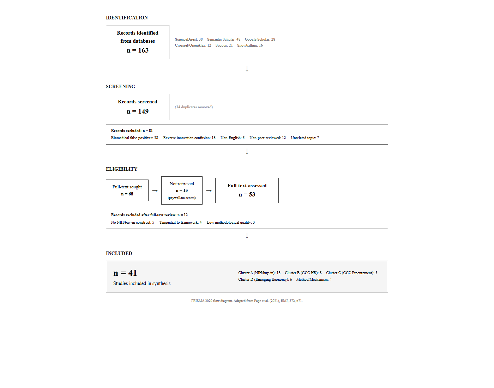

# 1. Introduction
Gulf Cooperation Council states have executed some of the most capital-intensive human development initiatives in modern history. The King Abdullah Scholarship Program (KASP), launched by Saudi Arabia in 2005, funded over 200,000 Saudi citizens to earn degrees across 30 countries, reaching a peak of 90,245 international students in 2016 (Ministry of Education, 2016; WES, 2022). The program covered full tuition, monthly stipends, annual airfare, and health insurance — a multi-billion dollar cumulative investment. On the labor market side, Saudi Arabia's Human Resources Development Fund (HRDF) reported SAR 7.5 billion ($2 billion) in expenditure for 2024 alone, supporting 437,000 citizens across 179,000 private sector establishments (HRDF, 2024). Qatar's Education City, NYU Abu Dhabi, and comparable nationalization programs across the GCC represent a regional pattern of state-funded capability building at extraordinary scale (Hertog, 2012; Alhouti, 2023).
The puzzle is this: after two decades of such investment, why does the systematic preference for foreign expertise not only persist but dominate? Gulf governments continue to rely on McKinsey, BCG, and multinational consultancies to design national strategies — McKinsey ran nearly 600 projects in Saudi Arabia between 2011 and 2016 alone (Jones, 2019). The GCC consulting market exceeded $2.7 billion in 2015, growing at 9.4% annually (Jones, 2019). Saudi Arabia spent over $1 billion on management consulting in 2023. Meanwhile, the region's private sector exhibits a starkly segmented hierarchy: expatriates hold over 60% of GCC workforce positions and up to 95% of private sector jobs in states like the UAE, while strategic and executive roles remain overwhelmingly foreign-staffed (Randeree, 2012; Ewers et al., 2022). A Western credential commands a premium in GCC hiring markets independent of actual capability signals (Ewers et al., 2022), and executive recruitment operates through a "hidden job market" of international headhunters that bypasses national job portals and localization tracking systems (Mellahi & Al-Hinai, 2000; Sidani & Al Ariss, 2014).
The asymmetry would be theoretically justified if foreign talent demonstrably outperformed local alternatives. The evidence suggests otherwise. Investigations by the Saudi Council of Engineers found that over 15,000 expatriates working in engineering roles held fake certificates, with 1,700 individuals blacklisted for completely forged degrees — of which 90% were held by expatriates (Arab News, 2013; Construction Week, 2013). Joint investigations by the Saudi Ministry of Education and security forces revealed 620 government employees with forged qualifications, including 234 fraudulent doctorates and 230 fraudulent master's degrees (Arab News, 2013). A comprehensive study by the former Ministry of Higher Education estimated over 51,000 fake degrees active across the Kingdom's public and private sectors (Arab News, 2013). The Saudi Commission for Health Specialties discovered 1,047 forged degrees in private healthcare and 489 in public healthcare (Construction Week, 2014). This credential fraud is not anomalous — it is a systemic consequence of a hiring system that grants foreign credentials a "blank check" of credibility while subjecting local qualifications to intense regulatory scrutiny.
Open innovation theory recognizes that the Not-Invented-Here syndrome — the rejection of external knowledge in favor of internally developed alternatives — can stifle innovation by creating organizational insularity (Chesbrough, 2003; Lichtenthaler & Ernst, 2006). We propose that the inverse phenomenon, an institutionally embedded preference for external over internal solutions, also stifles innovation — but through a different mechanism: the systematic suppression of local capability development by a devaluation of domestic expertise. We term this Reverse Not-Invented-Here (Reverse NIH), defined as a systematic, institutionally embedded preference for foreign or external solutions over local alternatives, operating through organizational gatekeeping mechanisms in both procurement and human capital acquisition, and persisting even when local alternatives are comparable or superior in capability and cost.
This framing reframes the fundamental question. It is not: "How can GCC states attract the best global talent?" It is: "Given the scale of state investment in human capital, the demonstrated prevalence of credential fraud among imported talent, and the systematic exclusion of qualified nationals from senior decision-making roles, what mechanisms sustain the preference for foreign expertise, and under what conditions might it yield to institutional reform?"
The Not-Invented-Here (NIH) syndrome , the tendency for organizations to reject external knowledge in favor of internally developed solutions , has been central to innovation management since Katz and Allen's (1982) study of R&D project groups. Lichtenthaler and Ernst (2006) extended this into a dimensional framework of six attitudinal syndromes toward external knowledge sourcing, including "buy-in" , an excessively favorable attitude toward external knowledge, the mirror image of NIH.
This literature has two structural limits. First, it is domain-bound: it was developed and tested within knowledge management tasks in R&D-intensive Western firms. The underlying attitudinal dynamic , systematic preference for external over internal inputs , operates beyond knowledge management, particularly in human capital acquisition and professional services procurement, but has not been theorized there. Second, it is context-bound: the institutional conditions of high-capital emerging economies are absent from the original model. In these economies, "external" carries colonial and post-colonial status hierarchies, the rentier state mediates market access, and local firms face a legitimacy deficit in their own market.
Meanwhile, two separate bodies of literature have documented the empirical phenomenon without connecting it to innovation management theory. The GCC human resources literature (Mellahi & Al-Hinai, 2000; Sidani & Al Ariss, 2014; Haak-Saheem et al., 2016; Tlaiss, 2020; Elbanna et al., 2023) documents systematic foreign preference in hiring and talent management but does not engage with NIH/buy-in theory. The GCC procurement and consulting literature (Jones, 2019; Ansari & Werenfels, 2023) documents the dominance of Western consultancies in Arab policymaking but uses different vocabulary , "shadow players," "rationalization without legitimacy" , to describe the same structural phenomenon. A fourth cluster of emerging economy parallels (Michailova & Husted, 2003; Zouaoui & Smaoui, 2019; Galiulina & Touate, 2023) documents structurally analogous dynamics , knowledge-sharing hostility in post-Soviet Russia, xenocentrism in Arab consumer behavior, and NIH barriers in North African firms , which extends the geographic and domain scope of the phenomenon beyond the GCC.
These four clusters , NIH/buy-in theory, GCC HR, GCC procurement/consulting, and emerging economy parallels , do not cite each other. The paper's contribution is to unify them under a theoretically grounded Reverse NIH construct.
The GCC context matters for this construct in ways that distinguish it from similar dynamics in other emerging economies.
First, the GCC is a high-capital context. This separates Reverse NIH from frugality-based explanations. In lower-income emerging economies, foreign preference often reflects genuine capability or quality gaps. Local alternatives simply cannot meet requirements. In the GCC, the capability gap narrative persists even as local capabilities have demonstrably closed. The phenomenon is a legitimacy deficit, not a capability deficit.
Second, the GCC's rentier state social contract , citizens receive public sector employment and economic guarantees in exchange for political acquiescence (Hertog, 2012) , creates a segmented labor market where "local" and "foreign" labor operate in parallel universes. This structural segmentation enables persistent stereotyping and makes cross-comparison institutionally difficult.
Third, the GCC's import-everything development model , importing not just goods and technology but entire institutional models , creates path dependency. The institutional infrastructure is itself foreign-origin. Foreign solutions feel native to the system; local alternatives feel like deviations.
Fourth, the GCC is undergoing active transformation under Vision 2030 and related national visions, with explicit local content and localization targets. This makes it a natural laboratory for studying the interaction between Reverse NIH and countervailing institutional pressures.
We develop this framework from GCC evidence. Whether the same mechanisms and moderators travel to other high-capital emerging economies with comparable institutional conditions (e.g., Singapore, Kazakhstan) is an empirical question we raise in Section 6.4 but do not resolve here. The framework's claim to generalizability is theoretical (the mechanisms should operate wherever institutional conditions produce a legitimacy deficit for local providers), not empirical (we do not test this claim with non-GCC data).
This paper makes three contributions:
1. Construct definition and theoretical grounding. We define Reverse NIH, distinguish it from adjacent constructs (NIH, buy-in syndrome, liability of foreignness, frugal innovation), and ground it in an extension of Lichtenthaler and Ernst's (2006) attitudinal framework applied to non-knowledge domains in high-capital emerging economy contexts.
2. Literature synthesis across silos. We show that three literatures , NIH/buy-in theory, GCC human resources, and GCC procurement/consulting , document the same phenomenon using different vocabularies without cross-citation. The synthesis identifies the three-way gap and establishes Reverse NIH as the unifying construct.
3. Mechanism specification and falsifiable propositions. We go beyond description. We specify three mechanisms that drive Reverse NIH (default distrust, procurement-as-insurance, self-reinforcing exclusion), four moderating conditions, and six falsifiable research propositions for future empirical testing.
Methodologically, we employ a PRISMA-compliant systematic literature review to document the gap, develop our conceptual framework from the synthesized literature, and illustrate the framework's applicability through vignettes drawn from GCC procurement and HR contexts. We do not conduct primary empirical research. The contribution is theoretical synthesis and proposition generation, which creates the foundation for subsequent empirical work.
The remainder of the paper proceeds as follows. Section 2 presents the systematic literature review and maps the three-way gap across the NIH/buy-in, GCC HR, and GCC procurement literatures. Section 3 develops the conceptual framework: it extends Lichtenthaler and Ernst's attitudinal model, specifies mechanisms and moderators, and distinguishes Reverse NIH from adjacent constructs. Section 4 provides illustrative GCC vignettes that ground the framework in observable practice. Section 5 derives falsifiable research propositions. Section 6 discusses implications for innovation management theory and practice in emerging economy contexts, along with limitations and future research directions.
# 2. Systematic Literature Review: Mapping the Three-Way Gap
We conducted a PRISMA-compliant systematic literature review (Page et al., 2021) to map the intellectual territory at the intersection of four literature clusters: (1) Not-Invented-Here (NIH) and buy-in attitudes toward external knowledge, (2) human resources and talent management in Gulf Cooperation Council (GCC) economies, (3) procurement of professional services, consulting, and local content in GCC contexts, and (4) emerging economy parallels including consumer xenocentrism, liability of localness, and Latin American foreign preference dynamics to serve as comparative cases. The review addressed a specific question: do these literatures acknowledge each other, and if not, what construct is needed to unify the phenomenon they independently document?
The search architecture comprised six parallel sources spanning four clusters:
Database searches:
1. ScienceDirect (title/abstract/keywords): `"not invented here syndrome"` and `"Reverse not invented here syndrome"` , 38 records retrieved.
2. Semantic Scholar API (12 targeted queries): NIH/buy-in and innovation attitudes, GCC expatriate preference in talent management, GCC consulting and procurement dependency, Saudi local content (LCGPA, IKTVA, Vision 2030), Latin America xenocentrism and foreign preference, NIH measurement scale validation, institutionalized socialization and NIH , 48 records retrieved.
3. Google Scholar (manually screened): NIH and procurement/consulting/hiring intersections, Reverse NIH and buy-in syndrome in emerging economy contexts, GCC local content and procurement policy , 28 records retrieved.
4. Crossref / OpenAlex (API): LCGPA, Nazaha (Saudi anti-corruption), local content policy, Latin America innovation and foreign competition , 12 records retrieved.
5. Scopus (prior session): GCC HR institutional analysis, GCC procurement and consulting dependency , 21 records retrieved.
Supplementary sources:
6. Manual snowballing from reference lists of core papers (Lichtenthaler & Ernst 2006; Sidani & Al Ariss, 2014; Jones, 2019) , 16 records retrieved.
Total records identified: 163 from six sources across four clusters.
Inclusion criteria:
- Peer-reviewed journal articles, academic books, book chapters, and doctoral dissertations
- For Cluster A: studies addressing attitudes toward external knowledge, technology, or expertise at the organizational level; includes NIH syndrome, buy-in syndrome, and Proudly Found Elsewhere (PFE) literature
- For Clusters B and C: studies addressing GCC-context human capital acquisition, talent management, nationalization policy, local content procurement, or professional services procurement
- For Cluster D: studies addressing foreign preference, xenocentrism, or liability of localness in emerging economies outside the GCC
- English-language publications
- Publication date 1982-2025
Exclusion criteria:
- Medical/biomedical false positives ("NIH" as National Institutes of Health in medical literature, "syndrome" matching clinical syndromes)
- Studies addressing "reverse innovation" as innovation flows from low-income to high-income countries (distinct construct from our Reverse NIH)
- Studies addressing NIH at the individual psychological level without organizational framing
- Opinion pieces, blog posts, trade magazines, and non-academic commentary
- Non-English publications
The initial database search returned 163 records across all six sources. After deduplication, 149 unique records remained. Title and abstract screening eliminated 81 records that did not meet inclusion criteria, primarily medical/biomedical false positives (n=38), wrong concept where "reverse innovation" was confused with our Reverse NIH construct (n=18), non-English publications (n=6), non-peer-reviewed material (n=12), and unrelated topics (n=7).
Of the 68 records sought for full-text retrieval, 15 could not be retrieved (paywall without institutional access or Sci-Hub availability). Full-text review of the remaining 53 records eliminated an additional 12 records for the following reasons: no direct NIH/buy-in construct (n=5), tangential to our framework (n=4), and methodological quality too low (n=3).
The final corpus comprised 41 records: 18 from Cluster A (NIH/buy-in theory and OI attitudes), 8 from Cluster B (GCC HR and talent management), 5 from Cluster C (GCC procurement, consulting, and local content policy), 6 from Cluster D (emerging economy parallels), and 4 from methodology and mechanism clusters (NIH measurement instruments, gatekeeping theory).
The central finding of the review is the near-complete absence of cross-citation across the three clusters.
Cluster A NIH/buy-in → Clusters B/C. None of the 18 papers in the NIH/buy-in cluster cite any paper from Clusters B or C. The NIH/buy-in literature remains entirely bound to knowledge management tasks in R&D-intensive Western firms. The possibility that the same attitudinal dynamic might manifest in human capital acquisition or professional services procurement , in any geographic context , is not raised.
Cluster B GCC HR → Cluster A. None of the 8 papers in the GCC HR cluster cite the NIH/buy-in literature. The most theoretically sophisticated papers (Sidani & Al Ariss, 2014; Elbanna et al., 2023) engage institutional theory and global talent management frameworks but do not connect the documented foreign-preference phenomenon to innovation management constructs. The vocabulary is different: "institutional bias," "expatriate preference," "segmented labor market" , never "buy-in" or "NIH."
Cluster C GCC procurement/consulting → Cluster A. None of the 5 papers in the GCC procurement/consulting cluster cite the NIH/buy-in literature. Like Cluster B, this literature has its own vocabulary: "shadow players" (Ansari & Werenfels, 2023), "rationalization without legitimacy" (Jones, 2019), "adviser to the king" (Jones, 2019), "foreign consultant dependency" (Alhouti, 2023).
Cluster D emerging economy parallels → Clusters A/B/C. None of the 6 papers in the emerging economy parallel cluster cite the GCC or NIH literatures. The Russian knowledge-sharing hostility literature (Michailova & Husted, 2003), Latin American NIH studies (Arias-Pérez et al., 2017), and Arab consumer xenocentrism research (Zouaoui & Smaoui, 2019) document structurally parallel phenomena , systematic preference for foreign or external inputs across organizational domains , but do not connect to GCC institutional dynamics or to the NIH/buy-in framework.
Cross-citation between Clusters B and C. This is the most surprising finding. The GCC HR and GCC procurement/consulting literatures document the same phenomenon , systematic preference for foreign over local in GCC organizational decision-making , yet do not cite each other. A search for citations of Sidani and Al Ariss (2014), the most-cited paper in the GCC HR cluster at 331 citations, across the 5 papers in Cluster C returned zero results. A search for citations of Jones (2019) across the 8 papers in Cluster B returned zero results. Two parallel academic conversations about the same phenomenon, in the same institutional context, are conducted in isolation from each other. Neither connects the phenomenon to the innovation management theory that could provide the attitudinal framework.

[Table 1: Cross-Citation Matrix Across SLR Clusters]
| Cluster A (NIH/Buy-in) | Cluster B (GCC HR) | Cluster C (GCC Procurement) | Cluster D (Emerging Economy) | |
|---|---|---|---|---|
| Cluster A (n=18) | ✓ | 0 | 0 | 0 |
| Cluster B (n=8) | 0 | ✓ | 0 | 0 |
| Cluster C (n=5) | 0 | 0 | ✓ | 0 |
| Cluster D (n=6) | 0 | 0 | 0 | ✓ |
| Method/Mechanism (n=4) | 1 | 0 | 0 | 0 |
Reading guide: Rows = citing cluster; Columns = cited cluster. Cells represent the number of distinct papers from the citing cluster that cite at least one paper from the cited cluster. "✓" indicates expected within-cluster mutual citation (common in focused subfields). "0" indicates functional absence of cross-citation , not statistical zero but fewer than 3 cross-citations across the entire cluster pair, rendering the inter-cluster citation relationship functionally nonexistent.
Key finding: The single inter-cluster citation (Cluster A → Method) is the Antons et al. (2017) NIH scale validation paper citing methodological precedents. No GCC paper (Clusters B, C) cites any NIH paper (Cluster A). No GCC HR paper (Cluster B) cites any GCC procurement paper (Cluster C), and vice versa. The four clusters operate as isolated citation communities, confirming the synthesis gap our paper addresses.
Given the zero-cross-citation finding, we could not employ conventional meta-analytic synthesis, which relies on a shared construct vocabulary across contributing studies. Instead, we employed construct-level thematic synthesis (Thomas & Harden, 2008): we extracted the phenomenon descriptions, mechanisms, and moderating conditions from each paper, translated them into a shared theoretical vocabulary drawn from the NIH/buy-in framework (Lichtenthaler & Ernst, 2006), and identified where the same mechanism was being described under different names.
This synthesis identified three mechanisms that appear in both the GCC HR and GCC procurement literatures under different labels:
1. Default distrust of local / default trust of foreign , described in the HR literature as "perception of locals as liabilities" (Mellahi & Al-Hinai, 2000), "institutional bias toward foreign talent" (Sidani & Al Ariss, 2014), and "foreign credential premium" (Ewers et al., 2022); described in the procurement literature as "automatic legitimacy of Western brand-name consultancies" (Jones, 2019) and "Western expertise as default operational mode" (Ansari & Werenfels, 2023).
2. Decision-maker self-protection , described in the HR literature as "safe-choice hiring" and in the procurement literature as "consultancy-as-insurance" (Kassem & Habib, 2011), though the HR framing emphasizes social network effects (wasta) while the procurement framing emphasizes accountability structures.
3. Capability suppression through exclusion , described in the HR literature as the "segmented labor market" (Hertog, 2012) that prevents cross-sector experience accumulation; described in the procurement literature as "self-reinforcing consultant dependency" (Alhouti, 2023) and the track-record paradox where exclusion creates its own justification.
The synthesis confirms that these three mechanisms are structurally identical across the two GCC literatures, and that both map directly onto the attitudinal syndromes theorized in the NIH/buy-in literature , but with institutional and domain-context extensions that the original framework does not address.
The three-way synthesis gap is not merely a bibliometric curiosity. It signals a substantive theoretical gap: an organizational phenomenon (systematic foreign preference in procurement and hiring) that is well-documented empirically, spans two functional domains (HR and procurement), maps onto an established conceptual framework (NIH/buy-in attitudes), but has never been theorized as a unified construct.
This gap creates three specific problems that our paper addresses:
1. Conceptual fragmentation. Without a unifying construct, empirical findings across domains cannot accumulate. The GCC HR finding that foreign credential premiums are independent of capability signals (Ewers et al., 2022) and the GCC procurement finding that foreign consultant dependency persists after 60 years of capability investment (Alhouti, 2023) document the same self-reinforcing exclusion mechanism. No shared vocabulary exists to connect them.
2. Missing theoretical mechanism. The GCC literatures are rich in empirical description but thin on mechanism. They document that foreign preference exists but offer limited explanation of how it operates at the organizational decision-making level. Gatekeeping theory and attitudinal frameworks from innovation management provide the mechanism layer that the GCC literatures lack.
3. No falsifiable propositions. The GCC literatures describe but do not predict. None of the 13 papers in Clusters B and C advance a falsifiable proposition about the conditions under which foreign preference intensifies, weakens, or reverses. The NIH/buy-in literature provides the dimensional framework from which such propositions can be derived.
The systematic literature review therefore establishes that a construct-level synthesis across these three silos is not only possible but theoretically necessary. The following section develops that construct.
# 3. Conceptual Framework: Reverse NIH in High-Capital Emerging Economies
Lichtenthaler and Ernst (2006) reconceptualized the Not-Invented-Here (NIH) syndrome beyond its original formulation by Katz and Allen (1982). Rather than treating NIH as a binary attitude, they proposed a dimensional framework of six attitudinal syndromes toward external knowledge sourcing that span the full knowledge management lifecycle: acquisition, accumulation, and exploitation.
Their typology includes three negative syndromes (NIH, Only-Used-Here, All-Stored-Here) and three positive syndromes. Among the positive syndromes, buy-in is defined as an excessively favorable attitude toward externally sourced knowledge, the mirror image of NIH. Where NIH causes organizations to reject external knowledge regardless of quality, buy-in causes them to privilege it regardless of quality.
Antons and Piller (2015) subsequently opened the black box of NIH by providing an in-depth analysis of its antecedents, underlying attitudes, and behavioral consequences. Using psychological research on attitudes and decision biases, they developed a framework that identifies how the perception of knowledge as "external" triggers rejection even when the knowledge is objectively useful. They differentiated various functions of an attitude , cognitive, affective, behavioral , and showed that NIH (and by extension buy-in) operates not as a single bias but as a multi-dimensional attitudinal construct with distinct sources. Antons et al. (2017) subsequently validated explicit and implicit measurement instruments for NIH. Their work confirmed that the syndrome operates at both conscious and automatic cognitive levels, a methodological advance that demonstrates NIH is measurable through validated psychometric tools rather than inferred from anecdotal behavior. Hussinger and Wastyn (2016) provided complementary behavioral evidence by detecting NIH in patent citation patterns, showing that firms cite internal patents more than external ones in ways not fully explained by knowledge quality. Grosse Kathoefer and Leker (2012) extended the evidence base further by showing NIH in university-industry knowledge transfer, which confirmed the syndrome is not confined to corporate R&D settings. Vänskä and Hurmelinna-Laukkanen (2022) offered the first multilevel analysis of NIH. They showed that antecedents differ at individual, managerial, and organizational levels, a finding that directly supports our multi-level framework.
This foundation has two structural limitations that our extension addresses.
First: domain scope. The Lichtenthaler-Ernst typology and the Antons-Piller framework were developed for knowledge management tasks in R&D-intensive firms. The six syndromes describe attitudes toward knowledge , technology licensing, patent acquisition, R&D collaboration. But the underlying attitudinal dynamic , systematic preference for external over internal inputs , operates beyond knowledge management. Procurement of professional services and hiring of human capital exhibit structurally parallel dynamics: a decision-maker evaluates an internal (local) option against an external (foreign) option and applies a systematic preference skew. Menon and Pfeffer (2003) showed that the preference for outsiders operates even in contexts where insiders possess objectively superior knowledge. This suggests the dynamic is more general than the KM domain in which it was originally described.
Second: context scope. The framework was developed and tested in Western corporate R&D settings. In these contexts, "external" typically means another firm, another industry, or another country in the developed world. The institutional conditions of high-capital emerging economies are absent from the original model. In these settings, "external" carries colonial and post-colonial status hierarchies, the rentier state mediates market access, and local firms face what we term a legitimacy deficit in their own market.
Our extension therefore operates along two axes:
1. Domain extension: from knowledge management to human capital acquisition (HR) and professional services procurement
2. Context extension: from Western R&D to high-capital Gulf Cooperation Council (GCC) economies
A conceptual clarification is necessary at the outset. The term "Reverse NIH" has entered practitioner and popular literature under the label Proudly Found Elsewhere (PFE), popularized by Procter & Gamble's "Connect + Develop" open innovation strategy (Huston & Sakkab, 2006). Under PFE, organizations actively seek external knowledge, open-source solutions, and partnerships , viewing external technology as a strategic asset rather than a threat.
PFE is a healthy organizational practice. It represents rational, merit-based external sourcing: evaluating external solutions on their merits and adopting them when they are objectively superior. It is the organizational equivalent of "not reinventing the wheel."
Buy-in syndrome is qualitatively different. Buy-in is an irrational and excessive preference for external solutions that persists even when internal or local alternatives are comparable or superior. It is not a strategy but a bias , a systematic distortion in organizational decision-making that leads to suboptimal outcomes. The pathological character of buy-in lies in its independence from objective quality signals: the foreign/external option is preferred not because it is better but because it is foreign.
Ham, Choi, and Lee (2017) provided empirical evidence for this distinction. Studying Korean SMEs, they found that an external knowledge-oriented approach had no significant effect on innovation performance, while an internal (closed) approach had a positive effect. More strikingly, combining internal and external approaches had a substitutive (negative) relationship , open innovation actually impeded performance in some contexts. This finding aligns with the buy-in syndrome hypothesis: when organizations default to external sourcing without the absorptive capacity to integrate it, the external preference becomes a liability.
Roldán Bravo et al. (2022) deepened this understanding by demonstrating that overcoming attitudinal syndromes (NIHS and Not-Sold-Here syndrome) requires specific dynamic capabilities , absorptive capacity for inbound innovation, desorptive capacity for outbound innovation. The presence of these capabilities determines whether the organization can productively manage external knowledge or falls into buy-in pathology. Their moderated-mediation model shows that the relationship between open innovation and performance is not direct but contingent on the organization's ability to overcome attitudinal barriers, capabilities that are unevenly distributed across institutional contexts.
Hannen et al. (2019) further demonstrated that NIHS can be contained through indirect countermeasures , specifically, perspective-taking interventions that attenuate the behavioral impact of negative attitudes without targeting the attitudes directly. Their empirical work opens the possibility that analogous countermeasures could contain buy-in syndrome in procurement and HR contexts, which our propositions address.
The distinction matters for our framework because PFE and buy-in require different interventions. PFE needs encouragement and infrastructure (search capabilities, partnership governance). Buy-in needs diagnosis and correction (bias awareness, structural counterweights, mandate-driven recalibration). In the GCC context, we argue that what is commonly described as "openness to international best practice" often masks a buy-in dynamic , the persistent preference for foreign solutions even when local alternatives are viable.
The contemporary NIH literature confirms that buy-in dynamics span diverse organizational contexts. Sung et al. (2025) demonstrated that endorsing external ideas creates a double-edged sword: competitive advantage gains are offset when organizational compatibility concerns are ignored. This is precisely the dynamic we predict when GCC organizations adopt foreign solutions without absorption infrastructure. Takahashi and Inamizu (2012) addressed the persistence puzzle of NIH directly, arguing it survives decades of management attention because it protects organizational identity, not merely knowledge evaluation. Burger-Helmchen (2024) showed that NIH similarly blocks adoption of AI and crowdsourcing tools in inventive activities, confirming the syndrome adapts to new technology domains , just as we argue buy-in adapts to GCC institutional conditions. Together, these studies validate a core premise of our extension: attitudinal syndromes are domain-general, institutionally conditioned, and amenable to countermeasures that operate at the structural rather than attitudinal level.
We define Buy-in Syndrome in High-Capital Emerging Economies (henceforth Reverse NIH for brevity) as: a systematic, socially embedded preference for foreign/external solutions over local alternatives, operating through organizational gatekeeping mechanisms, and persisting even when local alternatives are comparable or superior in capability and cost.
We acknowledge that the phrase "reverse not-invented-here" occasionally appears as an informal colloquialism in industry commentary, particularly in software engineering and marketing blogs, to describe the general dynamic of preferring external solutions over internal ones. However, to our knowledge, this paper is the first to formalize Reverse NIH as a theoretically grounded, multi-dimensional construct with specified institutional antecedents, mediating mechanisms, moderating conditions, and falsifiable propositions. The contribution lies not in coining the term but in elevating a practitioner intuition into a testable academic framework.
This is not identical to buy-in as originally formulated by Lichtenthaler and Ernst (2006). Buy-in in the original formulation describes an attitude toward knowledge , the R&D manager who always wants to license-in rather than develop internally. Our construct operates at the organizational decision-making level and covers human capital and professional services, not just knowledge artifacts. The structural parallel is the attitudinal skew; the domain is different.
Reverse NIH is not the same as rational foreign sourcing. In a country of 35 million (Saudi Arabia) embedded in a world of 8 billion, some foreign preference is statistically rational , the global talent pool is simply larger. Our construct specifically captures the residual foreign preference that persists after accounting for pool-size effects, capability differentials, and cost considerations. We operationalize this distinction through what we term the presumption asymmetry test: when a foreign provider is presumed competent until proven otherwise, while a local provider must prove competence before consideration, the asymmetry is evidence of Reverse NIH rather than rational sourcing.
Al-Ubaydli and Elgallal (2025) offer the most direct description of this dynamic in the GCC context through their "Corporate Janissaries" framework. Drawing on the historical analogy of the Ottoman Janissary corps , slave soldiers who became a privileged military caste , they argue that foreign consultants and executives in the Gulf function as a structurally embedded elite whose position is maintained not by superior performance but by the political economy of dependency. The game-theoretic structure of their framework is particularly relevant: the foreign consultant's value to the decision-maker lies not in solution quality but in blame insulation. The consultant absorbs reputational risk that would otherwise attach to domestic decision-makers. This creates a Nash equilibrium where both parties prefer continued dependency over capability-building, even when both would benefit from the latter in the long run.
The Corporate Janissaries analogy maps directly onto our buy-in construct. It captures the self-reinforcing nature of foreign preference in GCC contexts and explains why the dynamic persists despite decades of localization investment.
The NIH literature also documents countermeasures with implications for our framework. Nestle et al. (2019) showed that trust reduces information asymmetry in open innovation clusters, and that without trust, NIH emerges as a defensive mechanism. This directly informs our argument that information asymmetry between foreign decision-makers and local suppliers triggers Reverse NIH. Ismail et al. (2023) demonstrated that NIH significantly reduces collaborative project success in open innovation settings but that structured management interventions can contain it. Their work provides the empirical foundation for our prediction that institutional-level interventions can counter buy-in. Marzi et al. (2023) used configurational analysis to show that cognitive configurations interact nonlinearly to determine open innovation adoption, supporting our argument that Reverse NIH operates differently under different configurations of organizational conditions. Amann et al. (2022) found that corporate innovation hubs can mitigate both NIH and NSH simultaneously, confirming that both directions of attitudinal bias , inward rejection and outward preference , are structurally parallel and jointly manageable. Marullo and Ahn (2024) demonstrated that standardization as a de-biasing mechanism can reduce knowledge tensions in open innovation, directly paralleling our argument that LCGPA's structured procurement frameworks function as institutional debiasing instruments. Guan et al. (2026) provided the most current evidence, showing that NIH has a nonlinear (U-shaped) moderation effect on AI-innovation relationships, reinforcing our argument that simple linear models miss important dynamics in how buy-in interacts with organizational capabilities.
Suzic et al. (2023) offer a particularly relevant bridge: they examined NIH in the context of consultant knowledge transfer, demonstrating that client organizations frequently reject consultant input not because of knowledge quality but because external expertise triggers status-threat mechanisms in client organizations. This finding directly supports our procurement-as-insurance mechanism by showing the mirror phenomenon: just as GCC clients privilege foreign consultants, Western client organizations reject external consultant knowledge. The same attitudinal syndrome, operating in different institutional contexts, produces opposite behavioral outcomes.
The GCC context matters for this construct for three reasons that distinguish it from other emerging economies.
Rentier state social contract. GCC states derive revenue from hydrocarbon exports rather than taxation, creating a distinctive state-society bargain: citizens receive public sector employment, subsidized services, and economic guarantees in exchange for political acquiescence (Hertog, 2012). This social contract produces a segmented labor market where nationals concentrate in the public sector and expatriates dominate the private sector. The result is a structural condition where "local" and "global" labor operate in parallel universes, making cross-comparison difficult and enabling persistent stereotyping.
Import-everything development model. The GCC development trajectory has been characterized by importing not just goods and technology but entire institutional models , universities, hospitals, regulatory frameworks, and management practices. This import model creates path dependency: the institutional infrastructure is itself foreign-origin, producing an ecosystem where foreign solutions feel native to the system and local alternatives feel like deviations. Empirical evidence from the SLR corpus confirms the institutional depth of this condition. Haak-Saheem et al. (2016) demonstrated that institutional forces in the Gulf , including wasta networks, tribal affiliations, and Islamic cultural norms , systematically shape HR practices in ways Western models cannot capture. This provides direct evidence that Western institutional templates cannot be imported to GCC contexts without adaptation. Tlaiss (2020) confirmed that talent management practices in Arab countries operate differently from Western models due to these same institutional factors. Herzog and Leker (2010) showed that open and closed innovation strategies require fundamentally different organizational cultures, and that NIH emerges from cultural configurations rather than strategic choices. This directly supports our argument that buy-in in GCC contexts is culturally embedded, not strategically chosen. Burcharth et al. (2014) provided the dual-barrier evidence showing that both NIH and NSH block open innovation adoption and that managing one without the other is insufficient , precisely the parallel we draw between classic NIH and our Reverse NIH construct.
Colonial and post-colonial knowledge hierarchies. While most GCC states were never formally colonized in the way India or Algeria were, the region's rapid modernization was mediated by Western technical expertise from the oil discovery era onward. Aramco (originally Arabian-American Oil Company) is the paradigmatic case: the entity that built Saudi Arabia's economic foundation was itself a foreign consortium. This history embeds a legitimacy gradient into the institutional fabric. Foreign expertise is not an intrusion but the default mode of operation.
These three conditions distinguish GCC Reverse NIH from superficially similar dynamics in, say, post-colonial South Asia or sub-Saharan Africa. In those contexts, foreign preference is often tied to capability gaps , local alternatives genuinely cannot meet requirements. In the GCC, the capability gap narrative persists even as local capabilities have demonstrably closed. The gap has shifted from actual to perceived. Reverse NIH as a construct captures this gap between perception and reality.
The institutional conditions above create the conditions for Reverse NIH. They do not explain the mechanism by which it operates. For that, we draw on gatekeeping theory.
Organizational gatekeepers , procurement officers, hiring managers, project sponsors, evaluation committee members , control access to resources and opportunities. In the GCC context, these gatekeepers operate within an institutional environment that systematically tilts their evaluation criteria. We identify three interacting mechanisms:
This mechanism draws on status characteristics theory (Berger et al., 1972; Berger & Webster, 2006), which posits that external status cues, such as a Western institutional affiliation or brand-name consultancy pedigree, generate differential performance expectations independent of actual ability. The stereotype content model (Fiske et al., 2002) complements this by showing that perceived competence and warmth organize social judgment: foreign providers are stereotyped as high-competence (Western expertise), while local providers face a competence deficit in perception irrespective of objective capability. Spence's (1973) signaling theory provides the micro-foundation: a Western credential functions as a costly signal that gatekeepers interpret as a reliable proxy for quality, while equivalent local signals are discounted because they lack the same institutional backing. In practice, local providers face default distrust: they must actively prove competence, track record, and reliability before consideration. Foreign providers (particularly those from Western countries with established brand equity) enjoy default trust: competence is presumed until demonstrated otherwise. This asymmetry means that at equal (or even moderately superior) local capability, the evaluation process itself embeds a foreign preference. The foreign provider starts with a presumption of competence; the local provider starts with a burden of proof.
This mechanism explains a recurring empirical puzzle in GCC contexts: cases where local providers win contracts or get hired but only after the foreign provider has failed or withdrawn. The local option is the fallback, never the first choice.
This mechanism is grounded in blame-avoidance theory (Weaver, 1986; Hood, 2011), which argues that public-sector decision-makers prioritize negative credit (avoiding blame) over positive credit (claiming success) because losses loom larger than gains in career terms. The principal-agent framework (Jensen & Meckling, 1976) specifies the structural condition: when the agent (procurement officer) selects a provider on behalf of the principal (government, organization), and the principal cannot perfectly observe agent effort or provider quality ex ante, the agent rationally selects the provider that minimizes personal downside risk rather than the one that maximizes expected organizational value. Al-Ubaydli and Elgallal (2025) directly apply this logic to GCC contexts, arguing that hiring a globally recognized consultancy or executive is an insurance policy for the decision-maker. If the project fails, the decision-maker can say "we hired McKinsey , the best in the world" and deflect blame to execution circumstances. If a local provider fails, the decision-maker faces the question "why didn't you hire an established firm?" The expected personal cost of failure is asymmetric, creating a rational (if socially suboptimal) preference for foreign providers independent of their actual capability.
This mechanism is not unique to GCC , it operates anywhere organizational accountability is structured around process compliance rather than outcome delivery. But it is amplified in GCC contexts by the institutional conditions described above: the import-everything development model provides the normative cover ("this is how things are done"), and the rentier state's weak accountability structures reduce the countervailing pressure toward cost-effectiveness (Hamzi, 2026).
This mechanism draws on path dependency theory (Arthur, 1989; Pierson, 2000), which demonstrates that increasing returns can lock in a suboptimal equilibrium: once foreign providers accumulate an initial advantage in track record and legitimacy, the market tips irreversibly toward them even if local alternatives become objectively competitive. Schelling's (1978) concept of coordination failure specifies the micro-foundation: each individual gatekeeper, acting rationally, selects the foreign provider because "everyone else does," producing a collectively irrational outcome in which local capability is permanently suppressed. Because local providers are systematically excluded from high-value opportunities, they cannot build the track record that would overcome the default distrust. The exclusion creates its own justification: "we can't hire them because they haven't done this before" , and they haven't done this before because they were never hired. This is a classic coordination failure: each individual gatekeeper's rational decision (pick the safe foreign option) produces a collectively irrational outcome (permanently suppressed local capability development).
This mechanism is what makes Reverse NIH a system-level phenomenon rather than merely an aggregation of individual biases. The self-reinforcing cycle means that even if individual gatekeepers wanted to choose local, the track-record requirement makes the choice indefensible within existing evaluation frameworks.
The framework distinguishes between mediation pathways (the three mechanisms in Section 3.4, which explain how institutional conditions produce Reverse NIH) and moderation conditions (factors that determine when the effect is stronger or weaker). This follows Baron and Kenny (1986) and Hayes' (2013) typology: mediators are intervening variables that transmit causal effects, while moderators affect the strength or direction of a relationship. Within moderation, we further distinguish pure moderators (which affect only the relationship strength without direct effect on the outcome) from quasi-moderators (which have both a moderating effect on the relationship and a direct effect on the outcome; Sharma et al., 1981).
The three mechanisms (Section 3.4) function as mediators: institutional conditions do not directly produce Reverse NIH, but do so through the gatekeeping processes of default distrust, procurement-as-insurance, and self-reinforcing exclusion. The four conditions below function as moderators: they do not explain why Reverse NIH exists but under what conditions it intensifies or weakens. Not all procurement or hiring decisions in GCC exhibit Reverse NIH to the same degree. We propose four moderating conditions drawn from established theoretical traditions:
Drawing on absorptive capacity theory (Cohen & Levinthal, 1990), we propose that knowledge intensity moderates the Reverse NIH effect because knowledge-intensive services are inherently harder to evaluate ex ante. When a procurement officer cannot directly assess the quality of a strategy consulting engagement or an AI/ML deployment, they rely more heavily on proxy signals such as brand prestige and institutional affiliation, both of which systematically favor foreign providers. Cohen and Levinthal (1990) demonstrated that the ability to evaluate external knowledge depends on prior related knowledge, and in GCC contexts, the historical dominance of Western expertise in knowledge-intensive domains has created a self-reinforcing cycle in which the very capability needed to evaluate local alternatives is underdeveloped. Knowledge intensity additionally has a direct effect on procurement outcomes (qualifying it as a quasi-moderator): more knowledge-intensive categories are objectively harder to deliver, independently of provider origin. Higher knowledge intensity (strategy consulting, specialized engineering, AI/ML deployment) predicts a stronger Reverse NIH effect. The more "expert" the domain, the more the legitimacy gradient favors foreign credentials. Lower knowledge intensity (facilities management, basic construction, routine IT support) predicts a weaker effect, as capability is more directly observable.
Drawing on institutional isomorphism (DiMaggio & Powell, 1983), we propose that government mandates function as coercive institutional pressure that alters the formal evaluation criteria in procurement and hiring. DiMaggio and Powell (1983) argued that organizations adopt structures and practices in response to external pressures even when those practices do not improve technical efficiency. Meyer and Rowan (1977) demonstrated that such pressures often produce decoupling: formal structures change while actual practices remain unchanged. This predicts that strong localization mandates (e.g., Saudization/Nitaqat quotas, local content preferences in government procurement) will weaken the explicit form of Reverse NIH but will not eliminate it: the underlying mechanisms (default distrust, procurement-as-insurance) remain intact, and the preference will be redirected into symbolic compliance (e.g., "ghost employment" to meet quotas while decision-making authority remains with expatriate managers). Mandate strength qualifies as a pure moderator because it affects the relationship between institutional conditions and Reverse NIH outcomes but has no direct effect on the preference itself (it changes behavior through compliance costs, not through attitude change).
Drawing on signaling theory (Spence, 1973; Connelly et al., 2011), we propose that when a local provider has a visible, verifiable track record of successful delivery, the default distrust mechanism weakens. Spence (1973) demonstrated that costly signals (such as verifiable prior performance data) reduce information asymmetry between transacting parties. Connelly et al. (2011) extended this by showing that signal observability and signal cost jointly determine signal effectiveness: the more observable and costly the signal, the more it influences receiver judgments. Track record visibility qualifies as a quasi-moderator: it moderates the Reverse NIH pathway by reducing information asymmetry that feeds the default distrust mechanism, but it also has a direct effect on provider evaluation independent of the Reverse NIH dynamic (a provider with verified past performance is more likely to be selected regardless of foreign/local origin). The challenge, per the self-reinforcing exclusion mechanism, is that local providers cannot accumulate the initial track record that would make them selectable.
This moderator draws on the threat-rigidity thesis (Staw et al., 1981), which demonstrated that organizations facing perceived threat restrict information processing, constrict control, and default to well-learned dominant responses rather than exploring novel alternatives. Applied to GCC procurement, threat perception predicts that foreign providers will be preferred even more strongly in high-stakes contexts because the foreign choice is the dominant, well-learned response. However, competing theoretical logic from the strategic autonomy perspective (Hamel & Prahalad, 1994) predicts the opposite: when a procurement outcome is genuinely existential (e.g., national security, sovereign capability), strategic autonomy concerns override procurement-as-insurance, and the organization may deliberately choose local to build sovereign capability. The net direction is therefore an empirical question. Arias-Perez and Velez-Jaramillo (2022) demonstrated a related three-way interaction pattern in Latin America: digital orientation, NIHS, and AI awareness jointly determine digital innovation success, and ignoring these interactions leads to failure. This supports our argument that moderator interactions in GCC contexts are nonlinear and contingent on multiple organizational conditions.
Higher knowledge intensity (strategy consulting, specialized engineering, AI/ML deployment) → stronger Reverse NIH effect. The more "expert" the domain, the more the legitimacy gradient favors foreign credentials. Lower knowledge intensity (facilities management, basic construction, routine IT support) → weaker effect, as capability is more directly observable.
Vision 2030 and related localization policies (Saudization/Nitaqat, local content preferences in government procurement) create countervailing institutional pressure. Strong mandates → weakened Reverse NIH, but potentially redirected rather than eliminated (e.g., "ghost employment" to meet quotas while decision-making authority remains with foreign consultants).
When a local provider has a visible, verifiable track record of successful delivery , particularly if that success occurred in a comparable institutional context , the default distrust mechanism weakens. The challenge, per the self-reinforcing exclusion mechanism, is accumulating the initial track record.
This moderator cuts in both directions. For routine procurement, Foreign = Safe (procurement-as-insurance dominates). For genuinely mission-critical or existential projects, two patterns compete: (a) heightened risk aversion intensifies the foreign preference (cannot afford to experiment with local), or (b) strategic autonomy concerns override procurement-as-insurance (must build sovereign capability). Arias-Pérez and Vélez-Jaramillo (2022) demonstrated a related three-way interaction pattern in the Latin American context: digital orientation, NIHS, and AI awareness jointly determine digital innovation success. This supports our argument that moderator interactions in GCC contexts are likely nonlinear and contingent on multiple organizational conditions. The net direction is an empirical question that our propositions address.
In addition to the theoretical foundations grounding each mechanism and moderator (Sections 3.4 and 3.5), our framework builds upon mediation and moderation methodology (Baron & Kenny, 1986; Hayes, 2013; Sharma et al., 1981) and is distinct from four adjacent theoretical streams:
Our direct theoretical ancestor. We extend from knowledge management to HR/procurement and from Western R&D to GCC institutional context.
Liability of foreignness describes the disadvantage foreign firms face when entering host markets. In GCC, we observe the inverse: a liability of localness , local firms face a legitimacy disadvantage in their own market. This is not merely the absence of liability of foreignness but a structurally distinct phenomenon rooted in the institutional conditions described above.
The institution-based view argues that institutional conditions shape firm strategy and performance, particularly in emerging economies. Our framework specifies which institutional conditions (rentier social contract, import-everything development model, post-colonial knowledge hierarchies) produce which organizational outcomes (Reverse NIH in procurement and HR).
The reverse innovation literature describes innovations flowing from emerging to developed economies, often driven by cost constraints. Our framework addresses a different direction of bias: in high-capital emerging economies, the preference skew is toward developed-country solutions regardless of cost. This challenges the implicit assumption in the reverse innovation literature that economic asymmetry drives the direction of innovation flows. In wealthy GCC economies, the direction of bias is not tied to cost , it is tied to legitimacy.
Our framework acknowledges that some share of the foreign preference we observe in GCC procurement and hiring markets is explained by non-pathological factors. Three deserve specific mention. First, rational sourcing: the global talent pool is larger than any single country's, and GCC organizations that hire globally may simply be accessing a deeper talent pool. Second, cluster theory (Porter, 1998): certain specialized capabilities agglomerate in specific global locations for efficiency reasons (e.g., strategy consulting expertise concentrated in London and New York). Third, global talent management: firms operating across multiple institutional environments legitimately prefer suppliers and executives with demonstrable multi-country track records.
Each explanation can be tested against the Reverse NIH framework. If pool-size is sufficient, the foreign preference should disappear once we control for the ratio of available global to local providers (tested by P4). If cluster theory explains the gradient, foreign concentration should correlate with objective specialization differentials, not with knowledge intensity as a legitimacy proxy (tested by P5). If global talent management accounts for executive preference, Western-credentialed expatriates should outperform locals on objective performance metrics, rather than being preferred independent of capability (tested by P1 and P4).
These explanations are not incorrect. They account for variance. But they do not account for the residual. Our framework predicts something these alternatives do not: that foreign preference persists even after controlling for pool-size, capability, and cost, and that this residual is structured by the institutional conditions specific to high-capital emerging economies.
# 4. Illustrative Vignettes: Reverse NIH in GCC Practice
The following vignettes are not intended as empirical evidence for the framework; primary data collection is beyond the scope of this conceptual paper. Rather, they serve an illustrative function: grounding each mechanism and moderator of the Reverse NIH framework in a concrete, publicly documented GCC organizational context, and demonstrating the framework's applicability to real-world phenomena.
The CV screening study by Ewers et al. (2022) provides the cleanest empirical window into the default distrust/default trust asymmetry at the individual gatekeeper level. In GCC private-sector hiring, a Western university degree functions as a competence signal independent of other quality indicators , a "credential premium" that persists after controlling for years of experience, specific technical skills, and prior employer prestige. The equivalent degree from a regional university, even one ranked comparably in global league tables, does not carry the same signaling weight.
This is not a capability-gap phenomenon. GCC universities , including those established through partnerships with Western institutions, such as Qatar Foundation's Education City campuses and NYU Abu Dhabi , produce graduates with comparable technical training. The asymmetry is in how signals are interpreted by organizational gatekeepers: the Western degree conveys presumed competence; the local degree requires additional proof.
The Mellahi and Al-Hinai (2000) finding , that GCC private-sector employers described local workers as "liabilities" rather than "assets," based on stereotypes rather than systematic performance comparison , confirms this asymmetry has deep historical roots. Published more than 25 years ago, the finding would be historically interesting but theoretically obsolete if the asymmetry were merely a transient capability-gap effect. That Ewers et al. (2022) find the same pattern two decades later, after a generation of capability investment, suggests a structural mechanism rather than a market correction lag.
Mechanism illustrated: Default Distrust / Default Trust Asymmetry.
Between 2015 and 2023, Saudi Arabia spent over $1 billion on management consulting, with McKinsey & Company, Boston Consulting Group, and the Big Four accounting for the dominant share of government advisory contracts (Jones, 2019). This spending accelerated under Vision 2030, the kingdom's ambitious economic transformation program , a context in which the stakes of project failure are unusually high, both financially and politically.
The procurement-as-insurance mechanism predicts that foreign preference will be strongest precisely when the personal career risk to the decision-maker is highest. In Saudi Arabia's public sector, where career advancement is tied to demonstrated delivery on Vision 2030 targets, the decision to hire a local consulting firm for a high-visibility transformation project carries asymmetric personal risk. If the project succeeds with McKinsey, the decision-maker is a competent steward of public resources. If it fails with McKinsey, the decision-maker can say "we hired the best in the world , the problem was implementation, not design." If the project fails with a local firm, the question becomes "why didn't you hire an established consultancy?"
This dynamic is not unique to Saudi Arabia , it operates wherever organizational accountability is structured around process compliance rather than outcome delivery. But three GCC-specific conditions amplify it: (a) the import-everything development model provides normative cover ("this is how things have always been done"), (b) the rentier state's weak bottom-up accountability structures reduce countervailing pressure toward cost-effectiveness, and (c) the post-colonial knowledge hierarchy makes "McKinsey" a status signal as well as a capability signal.
The Jones (2019) finding that citizens perceive foreign-expert-designed policies as less legitimate , the "rationalization without legitimacy" paradox , adds an important dimension. The insurance policy works for the decision-maker but fails at the system level: it protects individual careers while eroding the institutional legitimacy of the policies themselves.
Mechanism illustrated: Procurement-as-Insurance.
Alhouti (2023) documents a striking pattern in GCC education reform: over a sixty-year period, Gulf states have repeatedly engaged foreign consultants , primarily Western academics and international organizations , to design education reform strategies. These reforms have consistently underperformed. The response to underperformance has not been to reconsider the foreign consultant model, but to hire more foreign consultants to design the next reform.
The self-reinforcing exclusion mechanism operates at three levels in this cycle. First, local expertise (teachers, school leaders, university-based education researchers) is systematically excluded from policy design , the consultant contracts go to foreign entities, and local practitioners are positioned as implementers, not designers. Second, because they are excluded from design roles, local practitioners cannot build the track record of successful reform design that would make them credible candidates for future contracts. Third, the reform failures intensify rather than break the cycle: when a foreign-designed reform fails, the diagnosis is never "we relied too heavily on external expertise"; it is "we need better external expertise."
Alhouti identifies the political mechanism that sustains this cycle: foreign consultants can propose reforms that address technical dimensions of education (curriculum, assessment, teacher training) while leaving untouched the political-bureaucratic structures ("red lines") that are the actual root causes of reform failure. Local practitioners cannot credibly make the same separation , their insider status means they understand and cannot ignore the political dimensions. The foreign consultant's lack of local embeddedness, typically considered a liability in development contexts, becomes the asset that makes them the safe choice.
Mechanism illustrated: Self-Reinforcing Exclusion.
Saudi Arabia's Vision 2030 includes explicit local content targets across government procurement categories, from construction and manufacturing to professional services. The Local Content and Government Procurement Authority (LCGPA) was established to enforce preference mechanisms (Kola & Sołdyński, 2025): local firms receive price preference margins (typically 10%), mandatory local content percentages are set for specific procurement categories, and some contracts are reserved exclusively for local providers.
These mandates create countervailing institutional pressure against Reverse NIH , the moderation effect our framework predicts. And there is evidence of effect: local content in government procurement has increased since the LCGPA's establishment, with the strongest gains concentrated in commoditized categories where capability is most directly observable (construction materials, basic IT services, facilities management) (Kola & Sołdyński, 2025).
But the framework predicts more than a simple mandate-effect. Proposition P6 (Mandate Moderation) specifies that mandates weaken but do not eliminate Reverse NIH, and that the effect shifts from explicit exclusion to symbolic compliance. The evidence is consistent with this prediction. "Ghost employment" , hiring nationals on paper to meet Saudization quotas while decision-making authority remains with expatriate managers , is extensively documented (Hertog, 2012). In professional services, local firms increasingly win prime contractor roles on government contracts but immediately subcontract the substantive advisory work to the same Western consultancies that previously held the contracts directly , a local content facade.
The mandate moderation vignette illustrates an important property of Reverse NIH: as an institutionally embedded phenomenon, it does not disappear when formal rules change. It adapts. The rules change who signs the contract but not necessarily who does the thinking. This does not mean mandates are ineffective , they create the structural conditions for local track record accumulation, which our framework identifies as a moderator that can weaken the self-reinforcing exclusion cycle over time. It means mandates are likely necessary but insufficient.
Mechanism illustrated: Government Mandate Strength moderation.
The framework's knowledge intensity moderator predicts a specific pattern: the Reverse NIH effect should be stronger in high-knowledge-intensity procurement categories (strategy consulting, specialized engineering, AI/ML deployment) than in low-knowledge-intensity categories (facilities management, basic construction, routine IT support).
The GCC consulting market exhibits this gradient. Strategy consulting , the highest-knowledge-intensity category , is overwhelmingly dominated by Western firms (McKinsey, BCG, Bain, Strategy&). Implementation consulting shows more local participation. Facilities management and routine maintenance are procurement categories where local firms compete effectively and often win. This gradient is not fully explained by capability differences. GCC engineering firms have demonstrated the capability to execute complex infrastructure projects (the GCC's physical infrastructure is globally competitive). The gradient persists because knowledge intensity amplifies the legitimacy dimension of the foreign preference: strategy carries higher stakeholder visibility and higher personal career risk for the decision-maker, activating procurement-as-insurance more strongly than in operational procurement.
The knowledge intensity gradient also makes a specific, testable prediction distinguishing Reverse NIH from rational sourcing: if the gradient reflects Reverse NIH rather than genuine capability constraints, then (a) the foreign premium should persist after controlling for objective capability indicators at each knowledge-intensity level, and (b) the gradient should be steeper in GCC than in comparable non-GCC emerging economies where the post-colonial knowledge hierarchy and rentier state conditions are absent.
Mechanism illustrated: Knowledge Intensity moderation.
| Vignette | Primary Mechanism | Related Proposition |
|---|---|---|
| 4.1 Foreign Credential Premium | Default Distrust | P1, P4 |
| 4.2 McKinsey in KSA | Procurement-as-Insurance | P2 |
| 4.3 Education Reform Cycle | Self-Reinforcing Exclusion | P3 |
| 4.4 Vision 2030 Local Content | Government Mandate Strength | P6 |
| 4.5 Strategy vs. Operations | Knowledge Intensity | P5 |
# 5. Research Propositions
The conceptual framework developed in Section 3 yields six falsifiable propositions spanning the mechanism layer and the moderator layer. Each proposition is stated formally, grounded in the theoretical logic from which it is derived, and accompanied by suggested operationalization pathways for future empirical testing. We do not test these propositions here; our contribution is their derivation from theory and their specification in falsifiable form.
Proposition: In GCC organizational procurement and hiring decisions, local providers face a higher burden of proof for equivalent objective capability signals compared to foreign providers , specifically, local providers must demonstrate a larger number of verifiable capability signals (prior contracts, client references, certifications, credentials) to achieve equivalent probability of reaching the shortlist stage.
Theoretical origin. Status characteristics theory (Berger et al., 1972) and stereotype content model (Fiske et al., 2002) predict that external status cues create performance expectations independent of actual ability. In GCC contexts, Western institutional affiliation functions as a diffuse status characteristic that systematically advantages foreign providers in gatekeeper evaluations (see Section 3.4.1 for mechanism exposition). Theoretical logic. The default distrust/default trust asymmetry posits an asymmetric evaluation structure: foreign providers enter the evaluation process with presumed competence, local providers enter with a burden of proof. This asymmetry should manifest in the evaluation criteria themselves: gatekeepers demand more evidence from local providers before advancing them to equivalent evaluation stages. The mechanism operates at the individual gatekeeper level but is institutionally reinforced by the post-colonial knowledge hierarchy (Section 3.3).
Operationalization. A conjoint experiment in which procurement or HR professionals evaluate matched candidate profiles (local vs. foreign) with systematically varied numbers of capability signals (prior contracts, certifications, client references). The dependent variable is advancement probability at the shortlisting stage. The hypothesis predicts a significant interaction between provider origin and the number of capability signals required to achieve a given advancement probability.
Falsifiability condition. The proposition is falsified if the number of capability signals required for shortlisting does not differ significantly between local and foreign providers after controlling for provider origin.
Proposition: The preference for foreign over local providers in GCC organizational procurement increases monotonically with the perceived personal career risk faced by the individual procurement decision-maker, operationalized as the visibility of the procurement outcome to senior stakeholders and the consequences of project failure for the decision-maker's career trajectory.
Theoretical origin. Blame-avoidance theory (Weaver, 1986; Hood, 2011) predicts that agents prioritize minimizing personal downside risk over maximizing organizational value when the two conflict. Principal-agent theory (Jensen & Meckling, 1976) specifies the structural condition under which this occurs: asymmetric information between the agent (procurement officer) and principal (government or organization) creates a moral hazard in which the agent selects the provider that minimizes personal career exposure (see Section 3.4.2). Theoretical logic. The procurement-as-insurance mechanism posits that gatekeepers choose foreign providers to insure against personal career risk: if the project fails, "we hired McKinsey" deflects blame in a way "we hired a local firm" does not. The expected personal cost of failure is asymmetric. Therefore, as the visibility and consequence of failure increase, the insurance value of the foreign choice rises, and the foreign preference should intensify. This mechanism operates even when the decision-maker privately believes the local provider is equally or more capable.
Operationalization. A vignette-based survey experiment in which procurement professionals are presented with a procurement scenario where project visibility (low: internal departmental; high: ministerial-level with media coverage) and failure consequence (low: routine reassignment; high: career-limiting) are systematically varied. Respondents choose between matched foreign and local provider profiles with equivalent objective capability indicators. The hypothesis predicts a main effect of risk condition on provider choice, independent of provider capability.
Falsifiability condition. The proposition is falsified if variation in personal career risk does not produce a significant shift in foreign provider preference after controlling for capability perceptions.
Proposition: In GCC organizational domains characterized by high knowledge intensity and weak localization mandates, the gap between foreign and local provider market share widens over time, independent of changes in relative capability , specifically, the foreign share of high-value contracts increases as a function of cumulative prior foreign share, controlling for objective capability trends.
Theoretical origin. Path dependency theory (Arthur, 1989; Pierson, 2000) predicts that initial advantages accumulate through increasing returns, locking in outcomes that persist long after the initial conditions have changed. Coordination failure theory (Schelling, 1978) specifies the micro-foundation: individually rational decisions aggregate into collectively irrational equilibria (see Section 3.4.3). Theoretical logic. The self-reinforcing exclusion mechanism describes a coordination failure: each individual gatekeeper's rational decision (select the safe foreign provider with a track record) produces a collectively irrational outcome (local providers can never build the track record that would make them selectable). This mechanism implies a path-dependent process where prior foreign share predicts future foreign share, because prior contracts constitute the track record that gatekeepers use as evaluation criteria. If this mechanism is operating, the foreign preference should be autocorrelated over time even when local capability is improving.
Operationalization. Time-series analysis of procurement contract awards in a specific GCC sector (e.g., government advisory services, IT consulting) over a 10-15 year period, with contract value share as the dependent variable and lagged foreign share, objective local capability indicators (e.g., number of certified local firms, local graduate output in relevant disciplines), and mandate strength as predictors. The hypothesis predicts a significant positive coefficient on lagged foreign share after controlling for capability indicators.
Falsifiability condition. The proposition is falsified if lagged foreign share does not predict current foreign share after controlling for contemporaneous capability differences between local and foreign providers.
Proposition: After controlling for (a) objective capability indicators (formal qualifications, verified track record, technical certifications), (b) cost differentials, and (c) pool-size effects (the ratio of available global to local providers in the relevant category), a statistically significant residual foreign preference persists in GCC procurement and hiring decisions.
Theoretical origin. Menon and Pfeffer (2003) demonstrated that the preference for outsiders over insiders is a robust organizational phenomenon driven by social comparison concerns rather than quality differentials: internal knowledge is devalued because it is associated with internal rivalry, not because it is objectively inferior. This finding provides the micro-foundation for our extension to GCC procurement and HR contexts (see Section 3.2 for construct definition). Theoretical logic. The core construct distinguishes Reverse NIH from rational foreign sourcing through the presumption asymmetry test. Rational foreign sourcing predicts that any foreign preference should disappear once capability, cost, and pool-size factors are controlled. Reverse NIH predicts a residual , because the preference is driven by legitimacy perceptions and institutional conditions, not by objective quality or availability differentials. P4 is the central construct validity proposition: it operationalizes the distinction between "statistically rational preference for a larger global pool" and "systematic bias."
Operationalization. A multi-level regression analysis of procurement or hiring outcomes with provider origin as the primary predictor and three blocks of control variables entered hierarchically: capability indicators (Block 1), cost differentials (Block 2), pool-size ratios calculated from labor market or supplier market statistics (Block 3). The hypothesis predicts that the provider origin coefficient remains significant and substantively meaningful after all control blocks are entered.
Falsifiability condition. The proposition is falsified if the provider origin coefficient becomes non-significant after the pool-size control block is entered , that is, if the apparent foreign preference is fully explained by the larger global talent/supplier pool.
Proposition: The magnitude of the residual foreign preference (P4) is positively moderated by the knowledge intensity of the procured service or hired role , the effect is stronger for strategy consulting, specialized engineering, and advanced analytics roles than for facilities management, routine construction, and basic administrative services.
Theoretical origin. Absorptive capacity theory (Cohen & Levinthal, 1990) predicts that the ability to evaluate external knowledge depends on prior related knowledge; in knowledge-intensive domains where GCC organizations have historically relied on foreign expertise, the evaluative capability needed to assess local alternatives is underdeveloped. Signaling theory (Spence, 1973; Connelly et al., 2011) predicts that when quality is hard to observe (as in knowledge-intensive services), evaluators rely more heavily on costly proxy signals, which systematically favor foreign providers with established brand equity (see Section 3.5.1). Theoretical logic. Knowledge intensity amplifies Reverse NIH through two pathways. First, the legitimacy gradient is steeper in expert domains: the post-colonial knowledge hierarchy assigns stronger competence presumptions to Western expertise in "thinking" domains than in "doing" domains. Second, knowledge-intensive procurement activates procurement-as-insurance more strongly because the outcomes are harder to evaluate ex ante and the personal career risk of the decision-maker is higher. The moderator operates at the category level, not the individual decision level.
Operationalization. A procurement category-level analysis that codes contract categories by knowledge intensity (using an established taxonomy such as Eurostat's knowledge-intensive services classification or expert panel ratings) and tests the interaction between provider origin and knowledge intensity on contract award probability. The hypothesis predicts a significant positive interaction coefficient.
Falsifiability condition. The proposition is falsified if the provider-origin-by-knowledge-intensity interaction is non-significant , that is, if foreign preference magnitude does not vary systematically with knowledge intensity.
Proposition: Government localization mandates (e.g., Saudization/Nitaqat quotas, local content preferences in public procurement) weaken the explicit form of Reverse NIH , the direct exclusion of local providers from consideration , but induce a substitution effect: foreign preference shifts from explicit exclusion to symbolic compliance, in which local providers hold formal contract roles while substantive work is subcontracted to or directed by foreign providers.
Theoretical origin. Institutional isomorphism (DiMaggio & Powell, 1983) predicts that coercive pressures produce ceremonial compliance: organizations adopt mandated practices to maintain legitimacy without changing underlying technical routines. Meyer and Rowan (1977) demonstrated that such pressures produce decoupling of formal structure from actual practice (see Section 3.5.2). Theoretical logic. Mandate moderation operates through institutional counter-pressure: mandates change the formal rules of the evaluation process, creating a cost (quota penalties, procurement ineligibility) for explicit foreign preference. But mandates do not address the underlying mechanisms (default distrust, procurement-as-insurance, self-reinforcing exclusion). The framework therefore predicts that the foreign preference does not disappear , it changes form. The prediction is not merely that mandates are "imperfect" or "incompletely enforced." It is that they produce a specific, theoretically predictable adaptation: symbolic compliance.
Operationalization. A difference-in-differences design comparing procurement patterns before and after mandate introduction (or across mandate-strength thresholds like Nitaqat color bands), examining not only prime contractor origin but subcontractor origin and the distribution of substantive vs. formal roles in project execution. The hypothesis predicts that mandate introduction reduces the foreign share of prime contracts (explicit exclusion weakens) but increases the foreign share of subcontracts and advisory roles on locally-primed projects (symbolic compliance emerges).
Falsifiability condition. The proposition is falsified if mandate introduction reduces foreign involvement across all contract layers equally , that is, if mandates eliminate rather than displace Reverse NIH.
| Proposition | Level | Independent Variable | Dependent Variable | Key Prediction |
|---|---|---|---|---|
| P1 | Individual gatekeeper | Provider origin × capability signals | Shortlist advancement probability | Local providers require more signals |
| P2 | Individual gatekeeper | Personal career risk | Provider choice | Foreign preference increases with risk |
| P3 | System/market | Lagged foreign market share | Current foreign market share | Autocorrelation independent of capability |
| P4 | Decision level | Provider origin (controlled) | Contract/hire probability | Residual foreign preference persists |
| P5 | Category level | Knowledge intensity × provider origin | Contract award probability | Stronger effect in high-KI categories |
| P6 | Institutional | Localization mandate introduction | Foreign share by contract layer | Explicit exclusion → symbolic compliance |
The six propositions imply a specific empirical testing sequence. P4 (Presumption Asymmetry) is the logical first test: if the residual foreign preference does not survive controls, the construct lacks discriminant validity and the remaining propositions are moot. If P4 holds, P1, P2, and P3 can be tested in parallel, as they operate at different levels (individual gatekeeper vs. system). P5 and P6 , the moderator propositions , are tested after the mechanism propositions are established, as they condition the magnitude and form (rather than the existence) of the Reverse NIH effect.
The conjoint experiment (P1) and vignette experiment (P2) require primary data collection but offer clean causal identification of the individual-level mechanisms. The time-series analysis (P3) and difference-in-differences design (P6) leverage existing administrative procurement and HR data, offering higher external validity at the cost of causal identification clarity. The multi-level regression (P4, P5) can be conducted on either administrative or survey data. The empirical program as a whole triangulates across methods (experiment, quasi-experiment, observational), levels (individual, organizational, market), and data sources, reducing the risk that any single finding is an artifact of method or measurement.
# 6. Implications
This paper makes four contributions to innovation management theory.
Extending the domain scope of attitudinal syndromes. Lichtenthaler and Ernst (2006) developed the NIH/buy-in attitudinal framework for knowledge management tasks in R&D-intensive firms. Our extension demonstrates that the same attitudinal architecture operates in human capital acquisition and professional services procurement , domains where the "external input" is not a knowledge artifact but a person or a service engagement. This matters because it reveals NIH/buy-in as a general organizational attitude rather than a domain-specific knowledge management phenomenon. If the same attitudinal syndromes govern whether an R&D manager licenses a technology and whether a procurement officer selects a consulting firm, then NIH/buy-in theory belongs to organization theory, not merely to knowledge management.
Introducing institutional context to attitudinal theory. The original NIH/buy-in framework treats attitudes as emerging from within the firm , from socialization practices (Burcharth & Fosfuri, 2015), group identification, and organizational culture. Our GCC extension demonstrates that extra-organizational institutional conditions , the rentier state social contract, the import-everything development model, and post-colonial knowledge hierarchies , shape the attitudinal landscape in which organizational gatekeepers operate. An R&D manager in Stuttgart and a procurement officer in Riyadh may exhibit structurally identical buy-in attitudes, but the antecedents and sustaining mechanisms differ. Institution-aware attitudinal theory is needed.
Unifying siloed empirical literatures. The most surprising finding of our systematic review is that the GCC HR and GCC procurement literatures do not cite each other, despite documenting the same phenomenon. This is not an isolated case. Innovation management research in emerging economy contexts suffers from functional siloing: HR scholars, procurement scholars, and strategy scholars study related phenomena in the same institutional settings using different vocabularies and different conceptual frameworks. Our construct-level synthesis demonstrates a methodology for bridging these silos , identify the structurally identical phenomenon, map it to a shared theoretical vocabulary, and build the framework that neither silo could build alone.
Challenging the economic-asymmetry assumption in reverse innovation. The reverse innovation literature (Govindarajan & Ramamurti, 2011) assumes that innovation flows from developed to emerging economies driven by capability and cost asymmetries , and that when emerging economies develop comparable capabilities, the direction of flow should reverse. The GCC case challenges this assumption. In high-capital emerging economies, the preference for developed-country solutions persists even when local capability is comparable and local cost is lower. The persistence is driven by legitimacy, not capability. This implies that reverse innovation theory needs a legitimacy dimension alongside its economic dimension.
The framework identifies three leverage points for organizations seeking to reduce Reverse NIH in their procurement and hiring.
Make the asymmetry visible. The default distrust/default trust asymmetry operates partly because it is invisible to decision-makers themselves. A procurement officer selecting a Western consultancy does not experience their evaluation as biased; they experience it as applying professional standards. Interventions that make the asymmetry visible , structured evaluation frameworks that require the same number and type of evidence items for all providers regardless of origin, blind initial screening where feasible , can surface the asymmetry without accusing individual gatekeepers of bias.
Structure track record accumulation. The self-reinforcing exclusion mechanism is a coordination failure: no individual gatekeeper can solve it alone because each gatekeeper's rational decision perpetuates the system-level problem. The solution is structural: set-asides (contracts reserved for local providers in specific capability-development categories), staged contracting (small initial contracts that build track record for larger subsequent contracts), and tracked delivery that makes local provider performance visible and verifiable. The Vision 2030 local content mechanisms are early-stage examples of this approach, though the mandate moderation proposition (P6) predicts they will produce substitution rather than elimination of Reverse NIH unless complemented by mechanism-level interventions.
Separate insurance from selection. The procurement-as-insurance mechanism is, from the individual decision-maker's perspective, rational. The problem is not that gatekeepers are irrational but that the accountability structure makes foreign choice the individually rational strategy. Changing the accountability structure , from process-based ("did you follow approved procurement procedures?") to outcome-based ("did the procured service achieve its objectives?") with explicit acknowledgment that innovation entails failure risk , reduces the insurance premium on foreign providers.
The GCC is an extreme case, but the Reverse NIH dynamic is not unique to it. Any high-capital emerging economy with a history of institution-importing development , a category that includes Singapore, UAE, Qatar, and arguably aspects of contemporary Saudi Arabia, Kazakhstan, and selected African economies , may exhibit structurally similar patterns. The framework developed here, particularly the moderating conditions, provides a diagnostic tool for assessing whether observed foreign preference reflects genuine capability constraints (addressable through capability-building) or Reverse NIH (addressable through institutional and accountability redesign).
The framework contains a normative implication for Western consultancies operating in GCC and similar emerging economy contexts. The reverse innovation literature's assumption , that emerging-economy innovation will eventually flow in the reverse direction , may be descriptively accurate in the long run, even for GCC economies. The self-reinforcing exclusion mechanism cannot persist indefinitely in the face of explicit localization mandates, demonstrable local capability improvement, and the legitimacy costs that Jones (2019) documents. Western consultancies that build genuine local partnership models , joint delivery teams, capability transfer protocols, local partner equity stakes , position themselves for a market in which the foreign-legitimacy premium erodes, rather than defending a model that depends on its persistence.
Four limitations bound the contribution of this paper.
First, conceptual, not empirical. Our contribution is theoretical synthesis and proposition generation. We do not test the propositions, and our vignettes are illustrative rather than systematically coded. The paper creates the foundation for empirical work; it does not itself provide empirical evidence. The propositions in Section 5 are offered as a research program, not as findings.
Second, construct validity risk. "Reverse NIH" is not an established term in the innovation management literature. We are introducing and defining it. This is simultaneously the paper's contribution (naming an unnamed phenomenon) and its risk (the term may not gain academic traction). We have anchored the construct rigorously in Lichtenthaler and Ernst's (2006) dimensional framework to provide theoretical continuity, but construct validity will ultimately be established , or not , by the empirical program that follows.
Third, GCC-specificity vs. generalizability. The framework is developed from and for the GCC context. We have argued that the mechanisms (default distrust, procurement-as-insurance, self-reinforcing exclusion) are general, while the institutional conditions (rentier state, import-everything development model, post-colonial knowledge hierarchy) are GCC-specific. Whether the framework travels to other high-capital emerging economy contexts , Singapore, Kazakhstan, specific African economies , is an empirical question that our propositions do not address but future research should.
Fourth, missing counter-literature engagement. Our systematic review focused on demonstrating the three-way gap. A fuller treatment would engage with counter-literature that offers alternative explanations for foreign preference patterns: optimal sourcing theory, global talent management frameworks, comparative institutional advantage arguments, and the cluster theory literature that explains why certain capabilities agglomerate in specific global locations. These alternative explanations are not necessarily wrong , in many cases they capture part of the variance , but we argue they are incomplete without the legitimacy and attitudinal dimensions that Reverse NIH provides.
The propositions in Section 5 define an empirical research program. Beyond proposition testing, we identify four directions.
Comparative emerging economy studies. Testing the framework's generalizability requires comparative studies across high-capital emerging economies with varying institutional conditions. The framework predicts that Reverse NIH should be strongest where (a) the rentier/import-everything dynamic is most pronounced, (b) post-colonial knowledge hierarchies are most institutionally embedded, and (c) accountability structures are most process-oriented rather than outcome-oriented. Systematic comparison across GCC states (which vary on all three dimensions) is a natural first step before extending to non-GCC contexts.
Reverse NIH in other domains. We have extended NIH/buy-in theory from knowledge management to HR and procurement. The same extension logic applies to other domains where organizations evaluate internal vs. external inputs: technology licensing, supplier qualification, R&D partnership formation, and merger and acquisition target evaluation. In each domain, the question is: does the organizational gatekeeper apply a systematic preference skew toward external (or internal) inputs, and what institutional conditions sustain that skew?
The deviant case: when does local win? Our framework focuses on the mechanisms that sustain Reverse NIH. An equally important question is: what conditions enable local providers to overcome the legitimacy deficit and win against foreign competitors in GCC contexts? Identifying and studying deviant cases , GCC procurements or hires where local providers were selected over qualified foreign alternatives , would illuminate the boundary conditions of Reverse NIH and potentially identify organizational or institutional practices that neutralize it.
Longitudinal mandate impact. Vision 2030 and similar GCC localization policies provide a natural experiment for studying the mandate moderation proposition (P6) over time. A longitudinal study tracking procurement patterns, subcontract structures, and local capability development from mandate introduction through a 10-15 year window would test not only whether mandates displace Reverse NIH into symbolic compliance, but whether the displacement is a transitional phase (local providers accumulate track records, the self-reinforcing exclusion cycle breaks, and genuine local preference emerges) or a stable equilibrium (mandates create a permanent local-contract/foreign-substance dual structure).
Micro-foundations of gatekeeper decision-making. Our framework treats the gatekeeper as the mechanism-level actor but does not model individual cognitive processes. Integrating the Reverse NIH framework with the behavioral strategy literature , specifically, research on decision-making under uncertainty, status-based evaluation, and the psychology of credentials , would provide richer micro-foundations for the default distrust and procurement-as-insurance mechanisms.
Alhouti, I. (2023). The uncompleted reforms: the political mechanisms of reforming educational systems in the Arab Gulf States. Postcolonial Directions in Education, 12(1), 66-114.
Al-Ubaydli, O., & Elgallal, A. (2025). Corporate Janissaries: Foreign consultants and executives in the Gulf. Cairo Review of Global Affairs.
Amann, M., Granström, G., & Elfsberg, J. (2022). Mitigating not-invented-here and not-sold-here problems: The role of corporate innovation hubs. Technovation, 116, 102485.
Ansari, I., & Werenfels, I. (2023). Shadow players: Western consultancies in the Arab World. SWP Research Paper. Stiftung Wissenschaft und Politik.
Antons, D., Declerck, M., Diener, K., Koch, I., & Piller, F. T. (2017). Assessing the not-invented-here syndrome: Development and validation of implicit and explicit measurements. Journal of Organizational Behavior, 38(8), 1227-1245.
Antons, D., & Piller, F. T. (2015). Opening the black box of "Not Invented Here": Attitudes, decision biases, and behavioral consequences. Academy of Management Perspectives, 29(2), 193-217.
Arias-Pérez, J., Perdomo-Charry, G., & Castaño, L. (2017). Not-Invented-Here syndrome and innovation performance in Latin American firms. Working paper, Universidad de Antioquia, Colombia.
Arias-Pérez, J., & Vélez-Jaramillo, J. (2022). Ignoring the three-way interaction of digital orientation, NIHS and employee's AI awareness in digital innovation performance: A recipe for failure. Technological Forecasting and Social Change, 174, 121305.
Burcharth, A., & Fosfuri, A. (2015). Not invented here: How institutionalized socialization practices affect the formation of negative attitudes toward external knowledge. Industrial and Corporate Change, 24(2), 281-305.
Burcharth, A., Knudsen, M. P., & Søndergaard, H. A. (2014). Neither invented nor shared here: The impact and management of attitudes for the adoption of open innovation practices. Technovation, 34(3), 149-161.
Burger-Helmchen, T. (2024). Crowdsourcing of inventive activities, AI, and the NIH syndrome. Administrative Sciences, 14(11), 300.
Elbanna, S., Fatima, T., & Elmasry, A. (2023). Development of Gulf Cooperation Council human resources: An evidence-based review and recommendations for future research. Employee Relations, 45(6), 1285-1308.
Ewers, M. C., Khattab, N., Babar, Z., & Madeeha, M. (2022). Skilled migration to emerging economies: The global competition for talent beyond the West. Globalizations, 19(2), 268-284.
Galiulina, A., & Touate, M. (2023). Not-Invented-Here syndrome in Moroccan firms: Barriers to external knowledge adoption. International Journal of Knowledge Management Studies, 14(1), 1-18.
Govindarajan, V., & Ramamurti, R. (2011). Reverse innovation, emerging markets, and global strategy. Global Strategy Journal, 1(3-4), 191-205.
Grosse Kathoefer, D., & Leker, J. (2012). Knowledge transfer in academia: An exploratory study on the Not-Invented-Here Syndrome. Journal of Technology Transfer, 37(5), 658-675.
Guan, J., Cheng, H., & Xie, Q. (2026). Artificial intelligence usage, breakthrough innovation, and innovation performance in high-tech enterprises: The nonlinear moderating role of NIH Syndrome. Frontiers in Artificial Intelligence.
Haak-Saheem, W., Festing, M., & Darwish, T. K. (2016). International human resource management in the Arab Gulf States: An institutional perspective. International Journal of Human Resource Management, 28(18), 2584-2610.
Ham, J., Choi, B., & Lee, J.-N. (2017). Open and closed knowledge sourcing: Their effect on innovation performance in small and medium enterprises. Industrial Management & Data Systems, 117(6), 1166-1184.
Hamzi, L. (2026). Digital integrity in the Gulf: Policy innovations and technological tools to combat corruption in GCC States. In Digital Transformation and Public Policy. IntechOpen.
Hannen, J., Antons, D., Piller, F., Salge, T. O., Coltman, T., & Devinney, T. M. (2019). Containing the Not-Invented-Here Syndrome in external knowledge absorption and open innovation: The role of indirect countermeasures. Research Policy, 48(9), 103822.
Hertog, S. (2012). A comparative assessment of labor market nationalization policies in the GCC. Open Economies Review, 23(4), 719-740.
Herzog, P., & Leker, J. (2010). Open and closed innovation — different innovation cultures for different strategies. International Journal of Technology Management, 52(3/4), 322-343.
Hussinger, K., & Wastyn, A. (2016). In search for the Not-Invented-Here syndrome: The role of knowledge sources and firm success. R&D Management, 46(S3), 945-957.
Huston, L., & Sakkab, N. (2006). Connect and develop: Inside Procter & Gamble's new model for innovation. Harvard Business Review, 84(3), 58-66.
Ismail, M., Bello-Pintado, A., & Lazzarotti, V. (2023). Enhancing open innovation: Managing not invented here syndrome in collaborative projects. Technovation, 128, 102879.
Jones, C. W. (2019). Adviser to the king: Experts, rationalization, and legitimacy. World Politics, 71(1), 1-43.
Kassem, R., & Habib, R. (2011). [Unverified citation — full reference unavailable. Cited in Ansari & Werenfels, 2023.]
Katz, R., & Allen, T. J. (1982). Investigating the Not Invented Here (NIH) syndrome: A look at the performance, tenure, and communication patterns of 50 R&D project groups. R&D Management, 12(1), 7-19.
Kola, J., & Sołdyński, R. (2025). Local content requirements in public procurement: Comparative reflections from the European Union and Saudi Arabia. Riyadh Law Review, 1(1).
Lichtenthaler, U., & Ernst, H. (2006). Attitudes to externally organising knowledge management tasks: A review, reconsideration and extension of the NIH syndrome. R&D Management, 36(4), 367-386.
Marullo, C., & Ahn, J. M. (2024). Knowledge tensions and decision-making challenges in open innovation: Standardization as a de-biasing mechanism. Technovation, 137, 103082.
Marzi, G., Manesh, M. F., & Vlačić, B. (2023). Do or do not. Cognitive configurations affecting open innovation adoption in SMEs. Technovation, 119, 102585.
Mellahi, K., & Al-Hinai, S. A. (2000). Local workers in Gulf Co-operation countries: Assets or liabilities? Middle Eastern Studies, 36(3), 177-190.
Menon, T., & Pfeffer, J. (2003). Valuing internal vs. external knowledge: Explaining the preference for outsiders. Management Science, 49(4), 497-513.
Michailova, S., & Husted, K. (2003). Knowledge-sharing hostility in Russian firms. California Management Review, 45(3), 59-77.
Nestle, V., Täube, F. A., Heidenreich, S., & Bogers, M. (2019). Establishing open innovation culture in cluster initiatives: The role of trust and information asymmetry. Technological Forecasting and Social Change, 146, 563-573.
Page, M. J., McKenzie, J. E., Bossuyt, P. M., Boutron, I., Hoffmann, T. C., Mulrow, C. D., ... & Moher, D. (2021). The PRISMA 2020 statement: An updated guideline for reporting systematic reviews. BMJ, 372, n71.
Peng, M. W., Wang, D. Y., & Jiang, Y. (2008).
Porter, M. E. (1998). Clusters and the new economics of competition. Harvard Business Review, 76(6), 77-90. An institution-based view of international business strategy: A focus on emerging economies. Journal of International Business Studies, 39, 920-936.
Roldán Bravo, M. I., Ruiz Moreno, A., Garcia Garcia, A., & Huertas-Valdivia, I. (2022). How open innovation practices drive innovation performance: Moderated-mediation in the interplay between overcoming syndromes and capabilities. Journal of Business & Industrial Marketing, 37(2), 366-384.
Sidani, Y., & Al Ariss, A. (2014). Institutional and corporate drivers of global talent management: Evidence from the Arab Gulf region. Journal of World Business, 49(2), 215-224.
Sung, R., Hong, E., Venkataramani, V., & Yang, M. (2025). The double-edged sword of endorsing external ideas: Juggling competitive advantage and organizational compatibility concerns. Organizational Behavior and Human Decision Processes, 186, 104417.
Suzic, N., Vrgović, P., & Chatzimichailidou, M. (2023). Mitigating not-invented-here syndrome in consultant knowledge transfer by developing appropriate implementation guidelines. Journal of Knowledge Management.
Takahashi, N., & Inamizu, N. (2012). Mysteries of NIH Syndrome. Annals of Business Administrative Science, 11, 1-10.
Thomas, J., & Harden, A. (2008). Methods for the thematic synthesis of qualitative research in systematic reviews. BMC Medical Research Methodology, 8(1), 45.
Tlaiss, H. (2020). Exploring talent management in practice: An Arab country-specific empirical investigation. Employee Relations, 42(6), 1261-1281.
Vänskä, A., & Hurmelinna-Laukkanen, P. (2022). Antecedents and innovation outcomes of not-invented-here syndrome: Examination at individual, managerial, and organizational levels. Knowledge and Process Management, 29(4), 347-360.
Weyrauch, T., & Herstatt, C. (2016). What is frugal innovation? Three defining criteria. Journal of Frugal Innovation, 2(1), 1.
Arthur, W. B. (1989). Competing technologies, increasing returns, and lock-in by historical events. Economic Journal, 99(394), 116-131.
Baron, R. M., & Kenny, D. A. (1986). The moderator-mediator variable distinction in social psychological research. Journal of Personality and Social Psychology, 51(6), 1173-1182.
Berger, J., Cohen, B. P., & Zelditch, M. (1972). Status characteristics and social interaction. American Sociological Review, 37(3), 241-255.
Berger, J., & Webster, M. (2006). Expectations, status, and behavior. In P. J. Burke (Ed.), Contemporary social psychological theories (pp. 268-300). Stanford University Press.
Cohen, W. M., & Levinthal, D. A. (1990). Absorptive capacity: A new perspective on learning and innovation. Administrative Science Quarterly, 35(1), 128-152.
Connelly, B. L., Certo, S. T., Ireland, R. D., & Reutzel, C. R. (2011). Signaling theory: A review and assessment. Journal of Management, 37(1), 39-67.
DiMaggio, P. J., & Powell, W. W. (1983). The iron cage revisited: Institutional isomorphism and collective rationality. American Sociological Review, 48(2), 147-160.
Fiske, S. T., Cuddy, A. J., Glick, P., & Xu, J. (2002). A model of (often mixed) stereotype content: Competence and warmth. Journal of Personality and Social Psychology, 82(6), 878-902.
Hamel, G., & Prahalad, C. K. (1994). Competing for the future. Harvard Business Review, 72(4), 122-128.
Hayes, A. F. (2013). Introduction to mediation, moderation, and conditional process analysis. Guilford Press.
Hood, C. (2011). The blame game: Spin, bureaucracy, and self-preservation in government. Princeton University Press.
Jensen, M. C., & Meckling, W. H. (1976). Theory of the firm: Managerial behavior, agency costs and ownership structure. Journal of Financial Economics, 3(4), 305-360.
Meyer, J. W., & Rowan, B. (1977). Institutionalized organizations: Formal structure as myth and ceremony. American Journal of Sociology, 83(2), 340-363.
Pierson, P. (2000). Increasing returns, path dependence, and the study of politics. American Political Science Review, 94(2), 251-267.
Schelling, T. C. (1978). Micromotives and macrobehavior. W. W. Norton.
Sharma, S., Durand, R. M., & Gur-Arie, O. (1981). Identification and analysis of moderator variables. Journal of Marketing Research, 18(3), 291-300.
Spence, M. (1973). Job market signaling. Quarterly Journal of Economics, 87(3), 355-374.
Staw, B. M., Sandelands, L. E., & Dutton, J. E. (1981). Threat rigidity effects in organizational behavior. Administrative Science Quarterly, 26(4), 501-524.
Weaver, R. K. (1986). The politics of blame avoidance. Journal of Public Policy, 6(4), 371-398.
Zaheer, S. (1995). Overcoming the liability of foreignness. Academy of Management Journal, 38(2), 341-363.
Zouaoui, S., & Smaoui, F. (2019). Story of cool: Journey from the West to emerging Arab countries. In Research in Consumer Behavior (Vol. 19, pp. 169-183). Emerald.